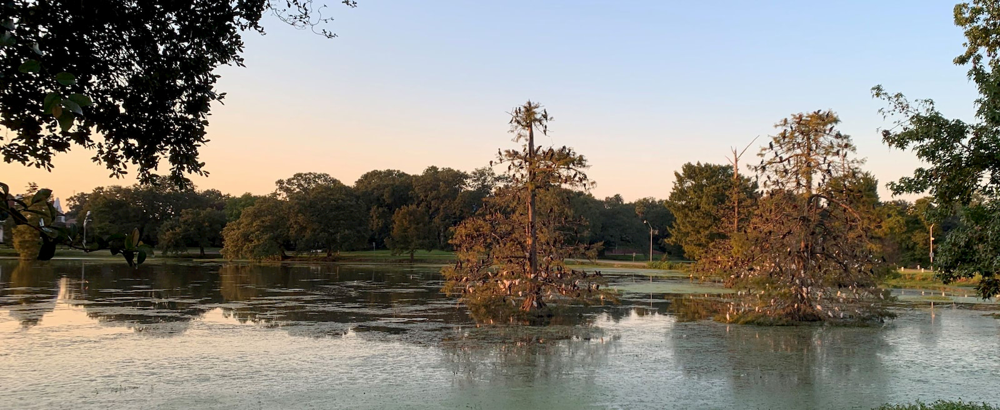

Participatory mobile music with smartphones
in this presentation i'll be discussing four of my most recent
smartphone works from a research and artistic perspective. I'll talk
about each work individually but also the themes that tie them together.
And finally i'll discuss my plans future work and for involving students
in this research while at College of Charleston.
Themes
Ubiquitous computing
Audience participation
User interaction
Accessibility
How can we use smartphones in a collective way to bring people together
to make art and music? How can we use smartphones to encourage awareness
of nature?
using the smartphone as an instrument allows for the breakdown between
audience and performer.
A more perfect union is an experiment in participatory real-time
composing, where the audience chooses the outcome of the work by
evaluating the sounds they hear. The longer a person listens to a melody
the more likely an aspect of that melody persist in future generations.
The work is based on an evolutionary algorithm, in which the fittest
sound of a group passes on its genes, combines with another fit sound,
and creates a new one with the best of both. The piece ends when an
emergent sound is found that should hopefully satisfy the
audience.
This is a performance version of the work that took place at LSU Museum
of Art on March 4, 2018
Mesh Garden (2018)
This piece is a sequencer made of distributed smartphones. The idea is
to allow a group of people in a relaxed situation to make a piece of
ambient music with their smartphones. I derive all the interactions with
the music from the orientation of the phones. The player makes one
motion, and it changes the piece then listens to the result. There is
not meant to be constant user interaction, more tuning the way you would
a stereo.
This work is meant to be experienced outside of the concert hall,
preferably with friends or family in a relaxed setting so here's a short
video of just that.

Sounds Aware (2019)
Sounds Aware is a web application that runs on a smartphone and uses
machine learning to detect human-made sound (anthrophony) and masks it
with ambient music as a user walks around their environment. Though the
model is pre-trained with the author’s local environmental sounds, the
user can train the model further on their unique soundscape so that each
user gets a personalized experience. After the training process, the
user can listen to ambient music based on traits of the surrounding
anthrophony. If the app senses less anthrophony and more biophony or
geophony, then the music fades away, bringing the user’s attention to
the anthrophony.
immaterial.cloud (2020)
immaterial.cloud is an immersive audiovisual installation that explores
a possible networked future of peer-to-peer technologies, away from the
cloud. Participants experience the work via two to four smartphones
placed in different locations in a room. As participants walk up to a
phone, they see a representation of themselves through data. If the
participant gets close enough, the phone triggers a change in the sound
of immaterial.cloud and the other phones follow.
Visualizations of participants interacting with the work.
immaterial.cloud creates the opportunity for a shared space with
participants by using technology in a collective way. It requires the
phones to act together, and out of their hands, not as individuals as is
usual in this era of personalized devices. Experiencing immaterial.cloud
presents an opportunity for a restoration of attention that might have
been lost by an overuse of technology in the typical way.